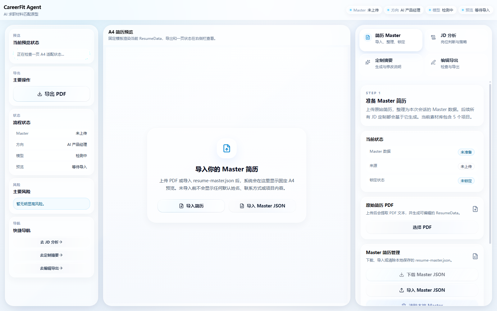
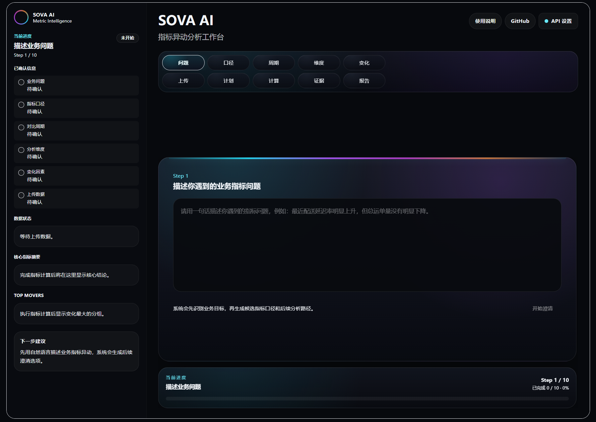
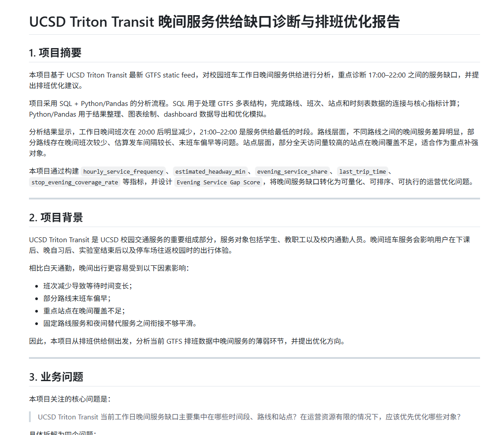

产品问题拆解
能把模糊需求拆成用户场景、功能逻辑、指标口径和优先级，避免只停留在“想法”层面。
AI JD Match Console
当前阶段使用本地关键词规则生成简洁预览，下一步会扩展为完整匹配报告弹窗。
粘贴 JD 后生成一份结构化岗位匹配报告。
粘贴一段岗位 JD 后，可以在这里看到岗位匹配预览。
Core Strengths
用 AI 产品思维、Agent 工作流设计和统计学背景，把模糊需求拆成可执行、可验证、可展示的产品原型。
能把模糊需求拆成用户场景、功能逻辑、指标口径和优先级，避免只停留在“想法”层面。
具备统计学背景，能在 AI 输出、岗位匹配和业务分析中关注证据来源、指标口径、结果可信度和异常信号。
理解 LLM、AI Agent、Prompt Engineering、RAG 和 Tool Calling 基础概念，能把 AI 能力拆进真实业务流程。
能从业务目标出发，关注转化、留存、效率、用户行为和决策支持，并把分析结果讲清楚。
能把想法整理成产品流程、Demo、分析报告和 GitHub 项目，而不是只停留在概念讨论。
能快速使用 Codex、Cursor、Vercel、GitHub 等工具完成原型开发、功能验证和上线部署。
Selected Work
用项目证明我对 AI Agent、大模型应用产品、工作流设计和质量防护机制的理解。
AI 求职材料匹配 Agent
AI Agent / LLM Product / Resume Tailoring
AI 指标异动分析 Agent
AI Product / Agent Workflow / Data Analysis
把“指标下跌但原因不明”的模糊业务问题，拆解成指标澄清、Metric Spec、异动分析、证据链和报告输出的 AI 工作流。
体现 AI 产品设计、Agent 工作流设计、指标口径设计、Prompt 结构设计和数据分析链路设计能力。
数据分析业务流程助手
AI Tool / Prompt Engineering / Business Analysis面向数据分析新手，将模糊业务需求转化为分析问题、指标体系、业务假设、分析路径和汇报大纲。
体现产品原型设计、Prompt 框架设计和业务分析流程设计能力，并为 SOVA AI 提供早期产品验证。
校园班车晚间服务缺口诊断与排班优化
SQL / Python / GTFS / Operations Analytics
基于 GTFS 数据分析 UCSD 校园班车晚间服务供给，识别 20:00 后尤其 21:00–22:00 的服务缺口，并提出排班优化建议。
作为统计和数据能力支撑项目，体现指标体系设计、运营问题诊断和业务建议能力。
AI 暴露度与编程职业就业前景分析
Statistics / Career Data / Labor Market
围绕 AI 暴露度与薪资、就业规模、增长预期之间的关系，整合 BLS、O*NET 和 AI exposure 数据进行分析。
体现统计分析、职业数据研究、变量比较、相关性解释和非因果解释意识。
Education
UC San Diego 统计学背景，为 AI 产品、数据分析和业务问题拆解提供数学、统计和数据方法基础。
University Background
加州大学圣地亚哥分校
B.S. Probability and Statistics
概率与统计 本科World University Rankings
Best Colleges
Best Colleges
Coursework
Skill Matrix
按照 AI 产品经理实习 / AI Agent 应用产品岗位逻辑，将能力分为产品、Agent、大模型应用、数据证据和工具交付五类。
能将模糊需求拆解为用户场景、产品流程、MVP 范围、质量标准和可交付方案。
理解 LLM 与 Agent 工作流，能够设计结构化输入输出、工具调用路径和质量防护机制。
关注真实场景中的 LLM 产品化，把生成能力转化为可解释、可检查、可导出的用户流程。
以统计学背景支撑 AI 输出判断，关注指标口径、证据来源、异常信号和结果可信度。
能够使用现代 AI 编程和协作工具完成原型开发、功能验证、文档整理和上线部署。
Contact
如果你正在寻找 AI 产品经理实习、AI Agent 应用产品或大模型应用产品方向的候选人，欢迎通过邮件或 GitHub 联系我。
我关注 AI Workflow、LLM 应用产品、结构化输入输出、质量检查机制和业务问题拆解，也愿意在真实团队中继续学习产品落地、用户反馈和跨团队协作。